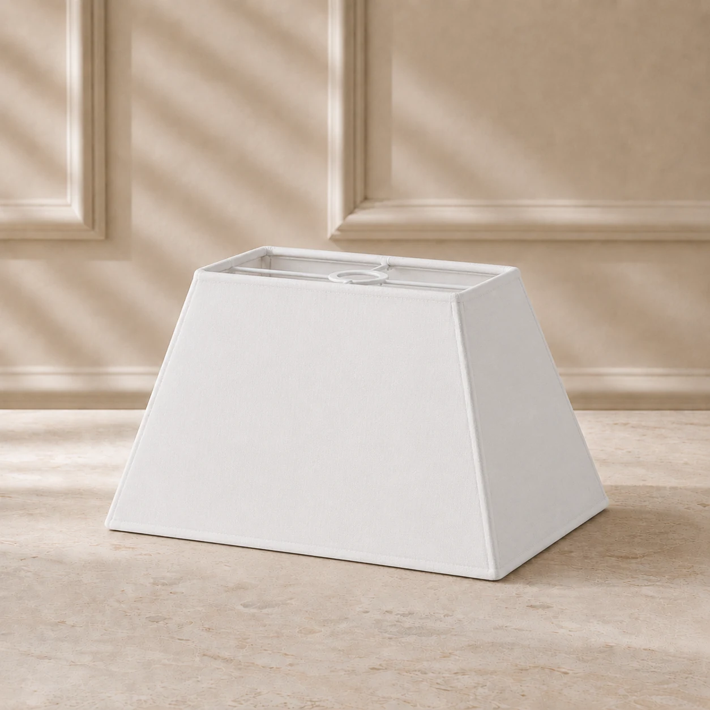
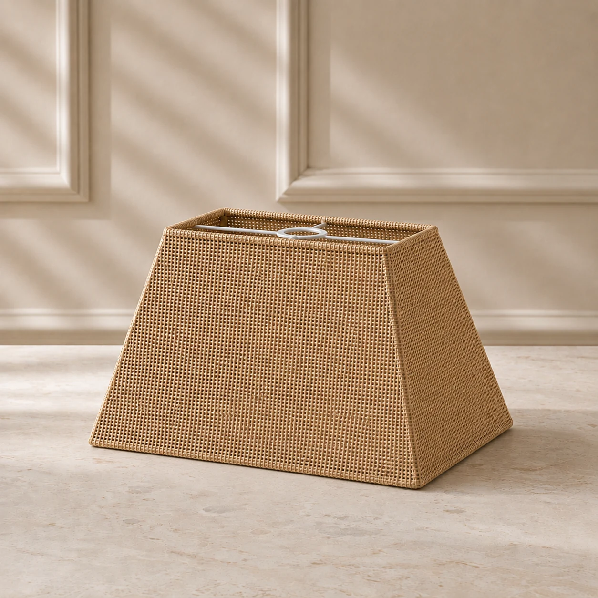
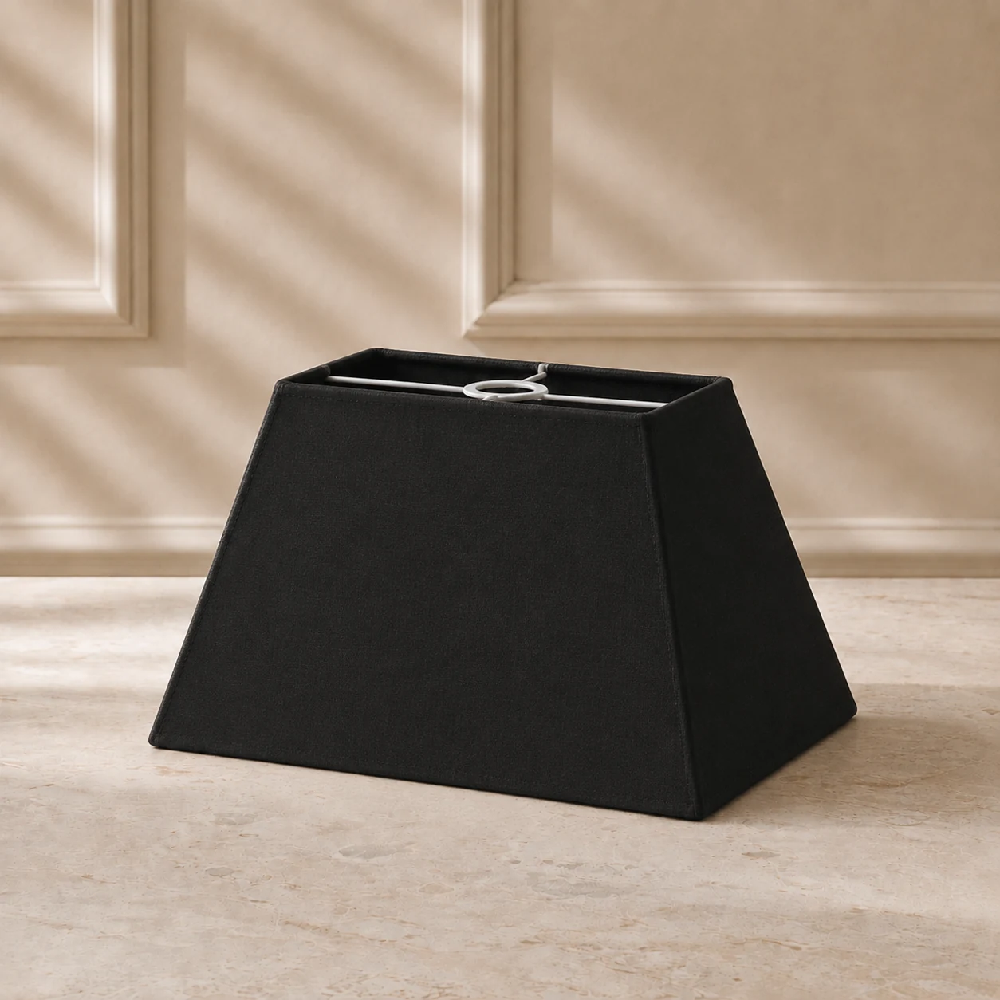

Formatos para projetos especiais
Cúpulas retangulares para abajures e luminárias sob medida.
Explore os modelos piramidais retangulares para abajures, pendentes e projetos de decoração. Defina o material e informe as dimensões para sua encomenda.
Sob encomenda · Embalagem incluída no preço · Consulte o frete no carrinho

Antes de configurar
A proporção retangular pede atenção às medidas.
Confira os lados superior e inferior, a altura e o encaixe da luminária. Modelos especiais podem exigir dimensões adicionais para avaliação técnica.
Consulte o guia de medidas ↗- 01
Formato piramidal
O topo e a base podem ter proporções diferentes. Verifique a geometria desejada antes de finalizar.
- 02
Acabamento em tecido
Escolha entre as referências de material e cor do configurador. A disponibilidade depende da encomenda.
- 03
Peças avulsas e lotes
Informe a quantidade desejada, seja para um abajur ou para um projeto em série.
Cores e acabamentos
Visualize opções para cúpulas retangulares
Imagens de referência de acabamento. As proporções finais dependem das medidas enviadas.


Como comprar
Comece com o formato retangular selecionado.
Abra o configurador com o formato piramidal retangular pré-selecionado. Escolha o tecido, informe as medidas e confira o preço quando houver cotação automática. O frete aparece no carrinho quando disponível.
Dúvidas frequentes
O que saber antes de encomendar
Qual a diferença entre cúpula quadrada e retangular?
Na quadrada, os lados têm o mesmo comprimento. Na retangular, há lados de comprimentos diferentes.
Posso pedir medidas personalizadas?
Sim. Algumas dimensões ou estruturas exigem avaliação da fábrica antes de confirmar a cotação.
Como consulto o frete?
Adicione uma configuração com preço automático ao carrinho e informe o CEP para consultar as opções disponíveis.
Explore também